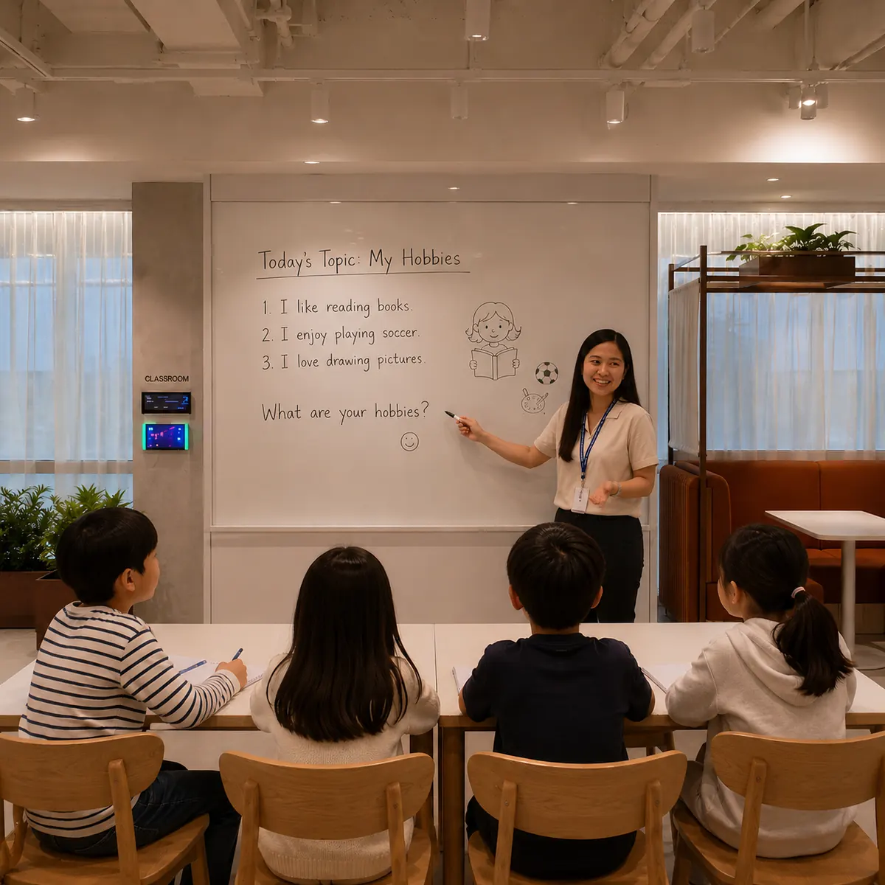
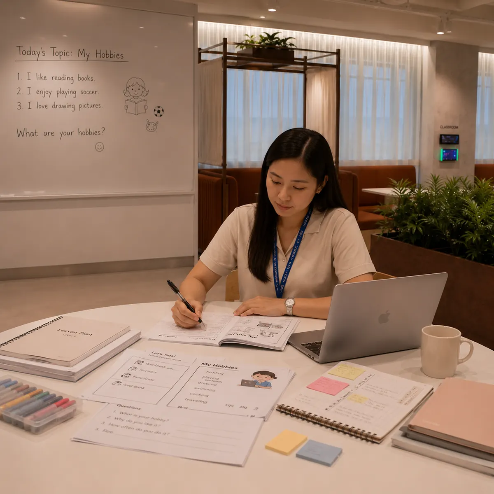

TESOL-Certified Teachers
Teachers hold internationally recognized TESOL certification and understand how English is learned as a second language.
About TSA
TSA teachers combine proven classroom experience with structured coaching and continuous quality review.

TEACHER STANDARD
Speaking English well is not enough. TSA selects teachers who can diagnose needs, explain clearly, guide practice, and correct with purpose.
Teachers hold internationally recognized TESOL certification and understand how English is learned as a second language.
Every teacher brings at least three years of hands-on classroom experience with real learners and goals.
Observation, feedback, coaching, and regular training help maintain a consistently high lesson standard.
TEACHING METHOD
Each class has a clear purpose and gives students enough guided output to turn understanding into usable English.
Review the student’s level, previous feedback, and the communication goal for the lesson.
Explain useful structure, vocabulary, pronunciation, and context through clear examples.
Use questions, tasks, role-play, and repetition so the student does most of the speaking.
Give immediate correction, repeat the improved form, and apply it in a new situation.
BEHIND EVERY LESSON
Strong lessons begin before class and continue through focused practice, observation, and feedback.



LESSON EXPERIENCE
Teachers balance encouragement with precise feedback so students can feel progress and understand what to improve next.

TSA lessons protect speaking time while keeping corrections focused and actionable.
QUALITY SYSTEM
TSA supports teachers with a repeatable quality process rather than relying on individual style alone.
Classes are reviewed to check clarity, pacing, student participation, and correction quality.
Teachers align on lesson standards and receive practical coaching for stronger delivery.
Lesson notes help the next class begin from what the student has already practiced and needs next.